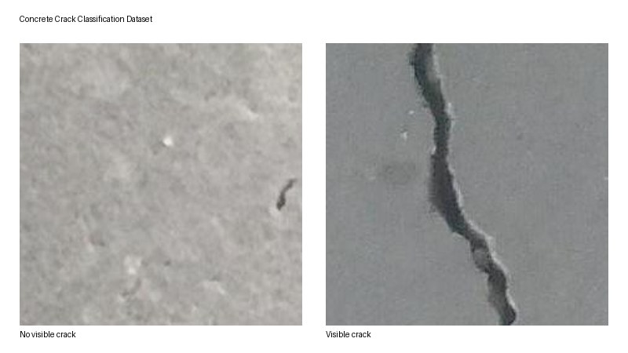
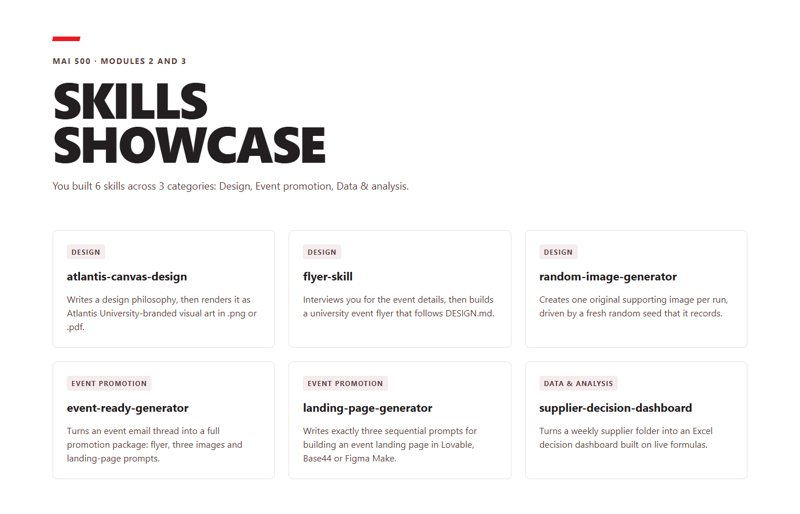
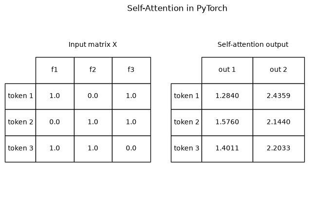

Civil engineer applying artificial intelligence to real-world infrastructure and visual data problems.

Concrete Crack Image Classification
A computer-vision project that classifies concrete surfaces as having a visible crack or no visible crack using MobileNetV2 transfer learning. I prepared a 40,000-image dataset with an 80/20 train-test split, resized and normalized the images, added training augmentation, and ran the PyTorch workflow locally with CUDA support. The recorded validation run confirmed that the data pipeline, preprocessing, model training, evaluation, and plotting worked together and that accuracy improved while loss decreased.

Local AI Skills Showcase
A local web page that presents six AI-related skills I built in earlier coursework. I organized the skills into three categories, kept the data in a separate JavaScript file, and built the page with plain HTML, CSS, and JavaScript so it works by double-clicking index.html with no server. The result is an offline browser page that renders all six skill cards without external dependencies.

Self-Attention in PyTorch
A PyTorch exercise that implements scaled dot-product self-attention for a small set of input tokens. I wrote the Query, Key, and Value matrix computation and the self-attention function, then tested them on a three-token example. The implementation produced a 3-by-2 output matrix with rows [1.2840, 2.4359], [1.5760, 2.1440], and [1.4011, 2.2033].